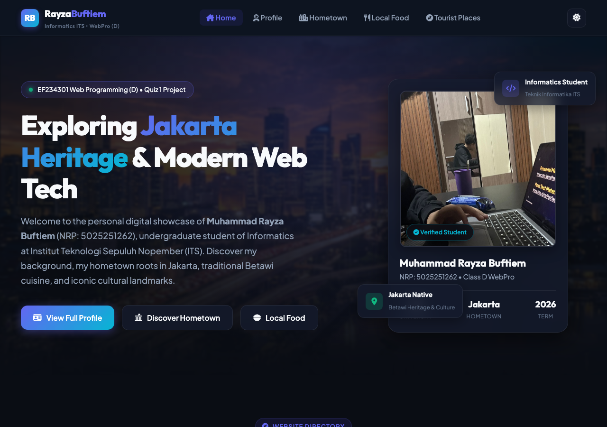
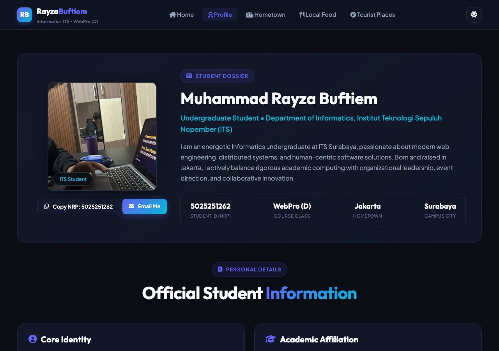
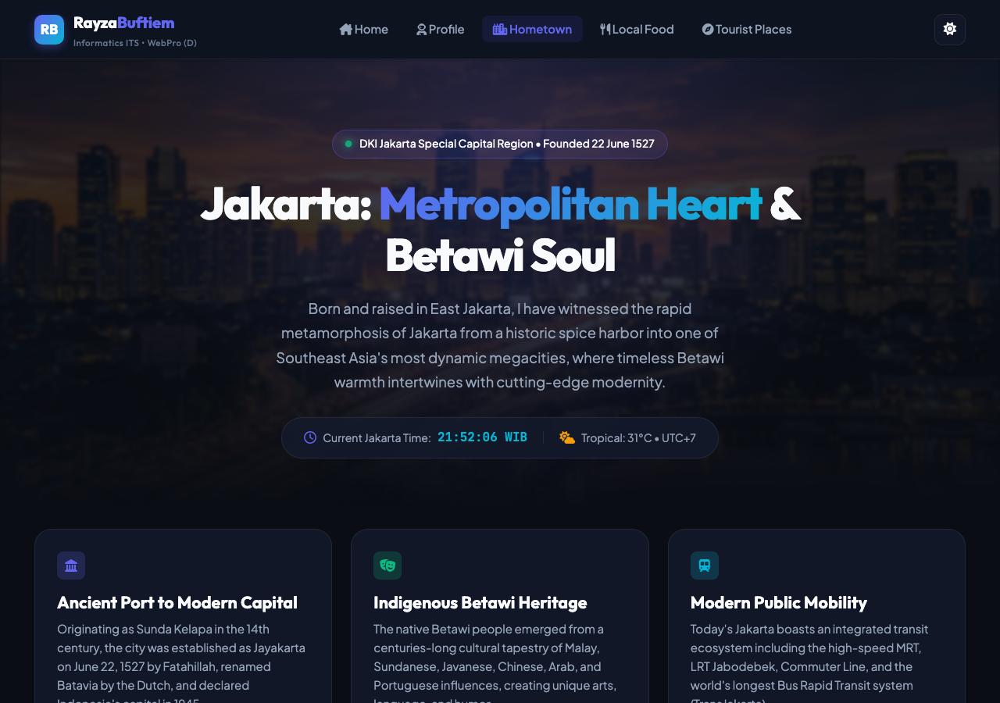
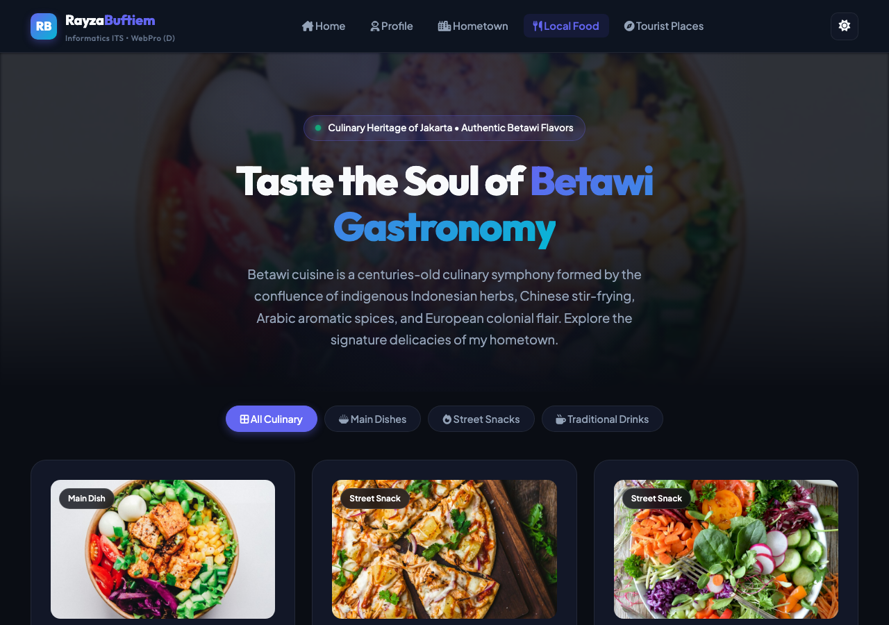
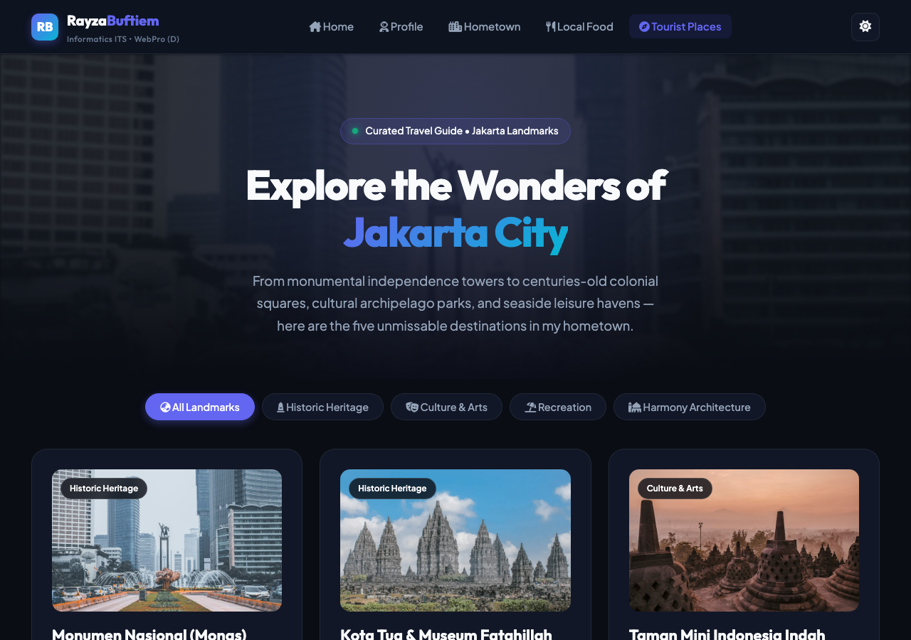

| Author / Student Name | Muhammad Rayza Buftiem |
|---|---|
| Student ID (NRP) | 5025251262 |
| Course & Class | EF234301 Web Programming • Class D |
| Instructors | MM Irfan Subakti • Assistants: Callista FRG & Kevin Andreas |
| Deployed Website URL | https://rayzabuf.github.io/webpro-quiz1/quiz1/ |
| Public GitHub Repository | https://github.com/rayzabuf/webpro-quiz1 |
The web project was engineered around the aesthetic ethos of modern high-performance design: clean typography, deep dark-first glassmorphism, responsive tactile micro-interactions, and instant light/dark theming. Rather than relying on generic browser defaults or boilerplate templates, the design system utilizes tailored CSS variables for fluid theming, Google Fonts (Outfit for strong modern headlines and Plus Jakarta Sans for readable body text), and subtle gradients that provide visual depth without sacrificing legibility or page speed.
In strict adherence to Section 1.B of the Quiz 1 specification, the project is structured with a multi-page directory-based architecture ensuring standard and intuitive URL routing:
(Your Domain)/quiz1 — Homepage: Central portal introducing the author, course metadata, and preview teasers for all chapters.(Your Domain)/quiz1/profile — Profile Page: Comprehensive academic profile, educational milestones, and technical skillset.(Your Domain)/quiz1/hometown — Hometown Page: In-depth portrait of Jakarta, covering 497+ years of history, indigenous Betawi culture, and modern transit.(Your Domain)/quiz1/food — Local Food Page: Curated Betawi culinary showcase with category filters and interactive recipe modals.(Your Domain)/quiz1/tourist — Tourist Places Page: Curated travel guide featuring top Jakarta landmarks with visitor recommendations and transit links.
A root index.html was also implemented to provide seamless redirection to /quiz1/, ensuring zero broken links regardless of whether the site is accessed at the root origin or via subpaths on GitHub Pages.
Every webpage follows strict semantic HTML5 standards. Landmarks such as <header>, <main>, <section>,
and <footer> are consistently applied. Each page contains a single <h1> element with logical heading levels (h2, h3, h4).
Every interactive element (buttons, modal close triggers, theme switchers) includes unique IDs and aria-label tags to guarantee screen reader compatibility and testability.
To ensure maximum control, optimal runtime efficiency, and zero bloat from external CSS frameworks, a custom unified design token system was built in quiz1/css/style.css:
:root level and swapped under body.light-theme, enabling instant color changes across all components.rgba(20, 27, 45, 0.75)) coupled with backdrop-filter: blur(16px) for an elevated, layered aesthetic..bento-col-4, .bento-col-6, .bento-col-12) that reflows gracefully on mobile viewports.
All dynamic features are implemented in vanilla JavaScript (quiz1/js/main.js):
localStorage, preventing jarring theme flashes upon navigating across pages.Intl.DateTimeFormat.data-filter and data-category attributes on card elements, smoothly orchestrating opacity and transform animations.Escape listeners.Below are actual high-resolution screenshots captured from the live deployed project across all five core pages:

/quiz1) — Hero banner, live student card, and portal bento directory.
Landing & Hub

/quiz1/profile) — Verified student photo, biodata table, educational timeline, and skill meters.
Author Dossier

/quiz1/hometown) — Jakarta historical milestones, Betawi cultural pillars, and live WIB clock.
Heritage & History

/quiz1/food) — Betawi culinary grid, flavor profile tags, price estimates, and recipe modals.
Gastronomy

/quiz1/tourist) — Monas, Kota Tua, TMII, Ancol, Istiqlal guide with category filters.
Landmarks & Transit
By avoiding heavy runtime libraries and excessive external dependencies, the total bundle transfer size remains exceptionally compact. Critical CSS is unified into a single cached file, and images utilize modern responsive containers with explicit dimensions, completely eliminating Cumulative Layout Shift (CLS) and ensuring sub-second First Contentful Paint (FCP).
Color contrast ratios across both dark and light modes surpass the WCAG AA threshold of 4.5:1 for body copy and 3:1 for large headlines. Interactive buttons feature generous touch targets (minimum 44×44 px), clear focus outlines, and appropriate ARIA attributes. The mobile navigation drawer provides a seamless touch-friendly experience on small viewports.
Deploying multi-page static sites to platforms like GitHub Pages frequently introduces path resolution errors
when absolute paths are hardcoded. This project solves that problem through a dual approach: relative navigation links
that function seamlessly across both local servers and GitHub Pages repository subpaths (/webpro-quiz1/quiz1/...),
coupled with a root redirect fallback script.
All criteria from the Quiz 1 instruction sheet are fully satisfied:
100% adherence to the required 5-page routing schema (/quiz1, /quiz1/profile, /quiz1/hometown, /quiz1/food, /quiz1/tourist),
inclusion of authentic personal biodata for student Muhammad Rayza Buftiem (5025251262),
thorough culinary and tourist coverage of Jakarta, and accompanied by the signed Academic Integrity Declaration.
The EF234301 Web Programming Quiz 1 website project successfully showcases a complete, visually stunning, and functionally robust personal and cultural portal. By applying modern frontend engineering practices—semantic HTML5, a custom vanilla CSS design system, and modular vanilla JavaScript—the project demonstrates that rich, interactive web experiences can be built with clean, maintainable, and high-performance code without unnecessary third-party dependencies.
In conclusion, the project fulfills all academic, aesthetic, and technical requirements set forth by the instructors, serving both as a verified academic deliverable and as an engaging digital tribute to the city of Jakarta.